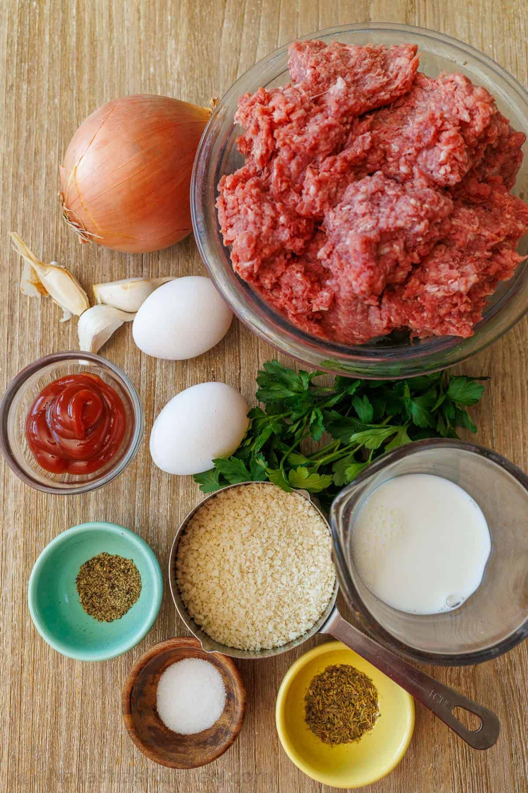
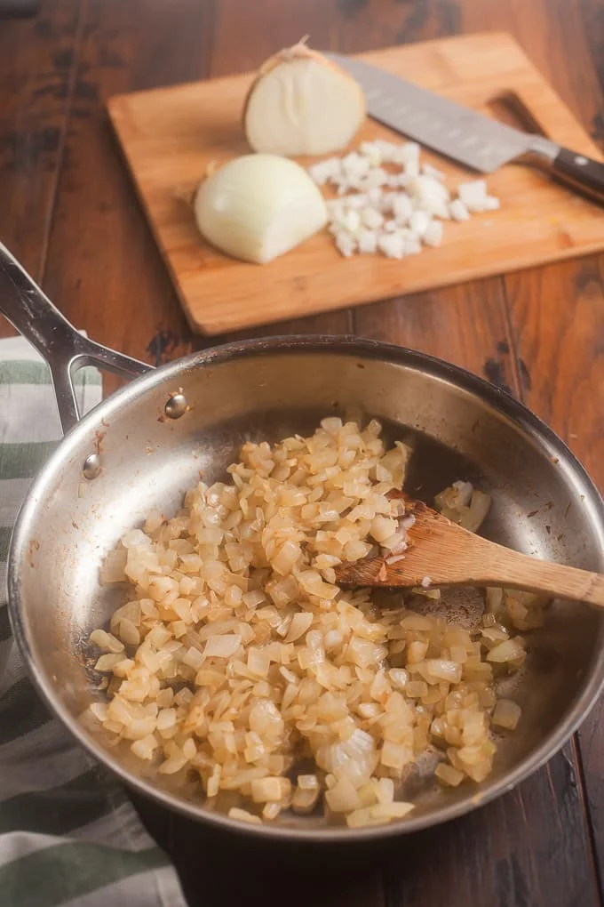
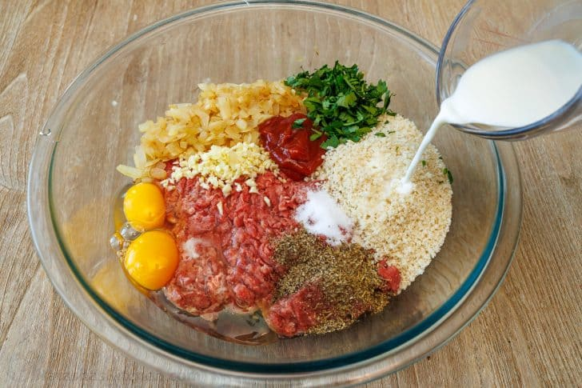
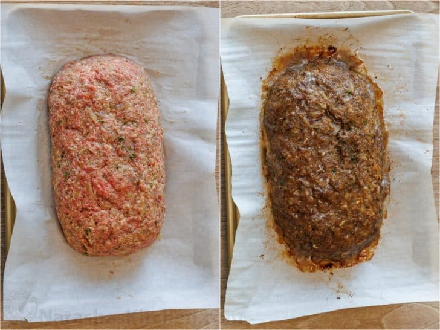
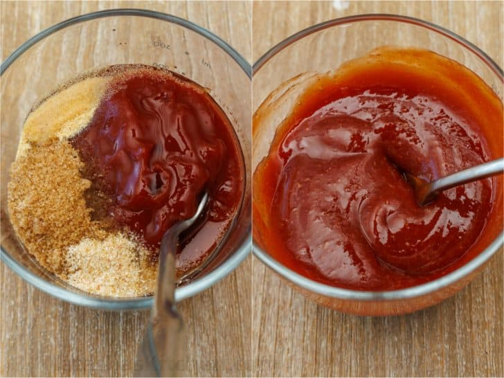
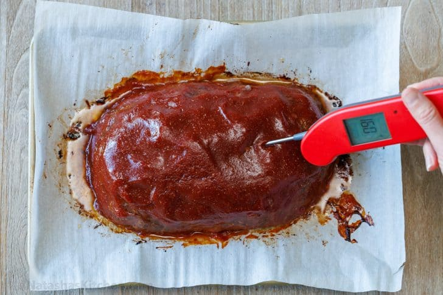

Meatloaf Recipe
Back to Homepage

This Meatloaf recipes gives you something mouth wateringly juicy and the whole family will love it!
Everybody needs a Meatloaf recipe they can rely on when all else fails, and this Meatloaf, topped with an
amazing glaze, will almost definitely become your third leg to stand on. Follow along to learn the tricks to it.
The Blueprint
- Lean Ground Beef- Use 80% or 85% lean meat. Just like you were making our famous Hamburgers. The fat content will make it all moist and juicy, but you should avoid the super lean ground beef.
- Onions and Garlic- Both of these aromatics come together great and add plenty of flavor to the Meatloaf
- Breadcrumbs and Eggs- Acts as binders to hold everything together. Instead of using Panko you could use italian breadcrumbs or even gluten-free breadcrumbs.
- Ketchup- Adds flavor and tenderizes the ground beef. It's fine to substitute it with a Tbsp of Worcestershire sauce if you need to.
- Milk- You have to get the breadcrumbs wet, and it also helps tenderize the beef so it will be softer and juicier.
- Seasonings- Fresh parsley will add freshness to the Meatloaf, while the italian seasoning, salt and pepper will enhance the natural flavors of the beef.
- For the Glaze- Combining ketchup, white vinegar, brown sugar, garlic powder and onion powder create a sweet and tangy glaze. If you don't have those, BBQ sauce will do the trick.

Making the Masterpiece
I see alot of people use loaf pans for their Meatloaf, and that's okay, but using a baking sheet has changed everything for me. It makes the edges crispy, cooks it faster, and it makes it easier to plate.
Prep
- Prepare your baking sheet- Line your baking sheet with parchment paper or aluminum foil, this will make it easier to clean up. After that preheat your oven to 350 F
- Sautee your Onions- Splash some oil in your pan over medium heat, mixing it up occasionally for 5-7 minutes or until golden and softened. Put it on a plate and set it aside to cool.

- Making the Meaty mixture- Using a Huge bowl, add all of the meatloaf ingredients and mix it until it is well combined. Getting wrist deep in there is the best way to get it done, so having gloves is nice.

- Shape your loaf and Bake it- Put your meat on the pan and shape it however you please, we are choosing a loaf. 8 inches long, 4 inches wide and 3 inches tall. Bake it, unsheathed, at 350 F for 40 minutes.

- Time to get to glazing- In a separate bowl, mix the ingredients for the sauce together until it is all combines.

- Spread the sauce- Spread the glaze on the meatloaf, the put it back in the oven and bake it for an additional 20 minutes. let it rest for 10-15 minutes when it is done.

Ingredients
Now that all that is said is done, what do I need for this? In what quantities? Ask a question, We have an answer.
Keep in mind that this is for 8 servings. Adjust it to your personal needs.
Meatloaf ingredients
- 2 lbs ground beef, 85% or 80% lean
- 1 med onion, 1 cup, finely chopped
- 1 tsp olive oil
- 2 large eggs
- 3 garlic cloves, minced
- 2 Tbsp ketchup
- 3 Tbsp fresh parsley, finely chopped
- 3/4 cup Panko breadcrumbs, or gluten-free bread crumbs
- 1/3 cup milk
- 1 tsp salt
- 1 tsp italian seasoning
- 1/2 tsp ground black pepper
Meatloaf sauce ingredients
- 3/4 cup ketchup
- 1 1/2 tsp white vinegar
- 2 Tbsp brown sugar
- 1/2 tsp garlic powder
- 1/2 tsp onion powder
This recipe came from Kravchuk, Natasha. The Best Meatloaf Recipe.
Natasha's Kitchen, 2025, The Best Meatloaf Recipe